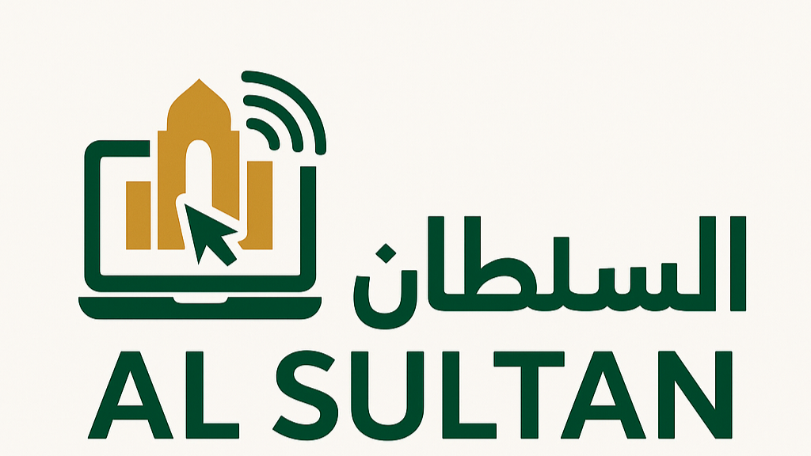

السلطان للخدمات الإلكترونية
☰
الرئيسية
الخدمات
الباقات
الأسئلة الشائعة
تواصل معنا
استشارة واتساب
الرئيسية
الخدمات
الباقات
الأسئلة الشائعة
تواصل معنا
استشارة واتساب
الأسئلة الشائعة
ما المدة المتوقعة لتأسيس شركة؟
غالبًا من 3 إلى 10 أيام عمل بعد اكتمال المتطلبات.
هل يمكن التفويض لإدارة المنصات الحكومية؟
نعم، نوفر إدارة كاملة بإذن رسمي من العميل.